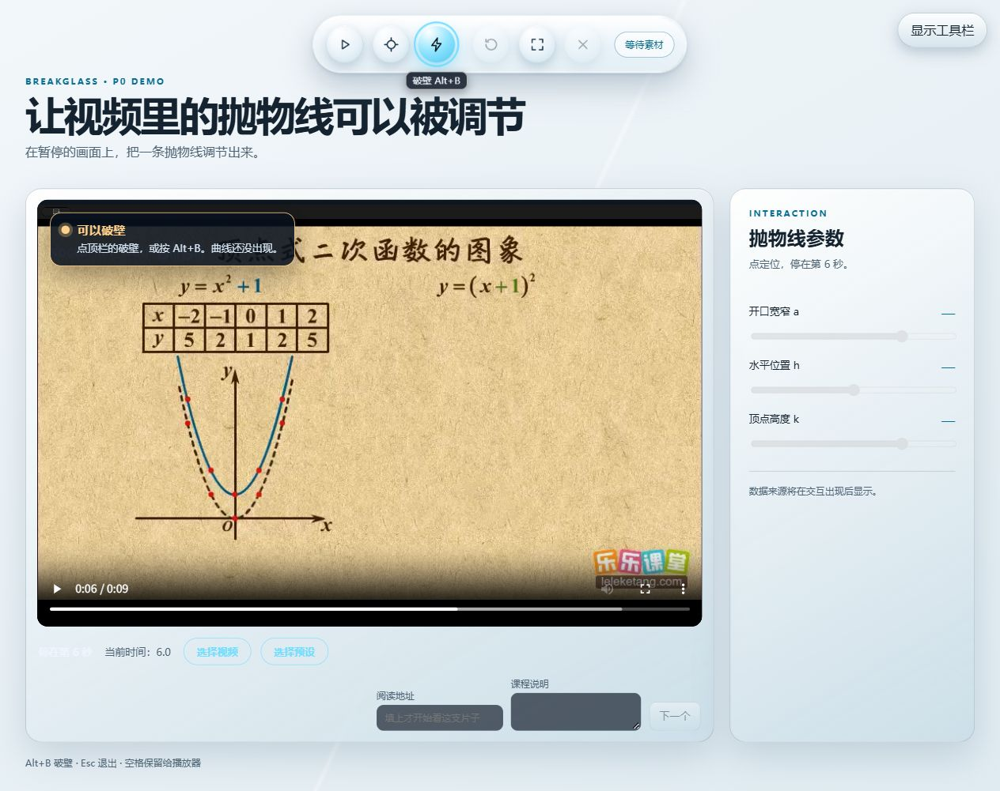
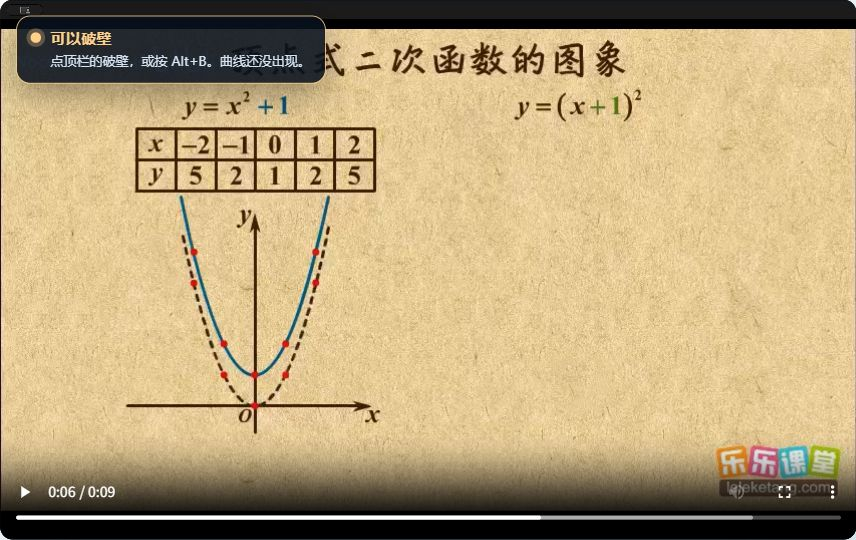
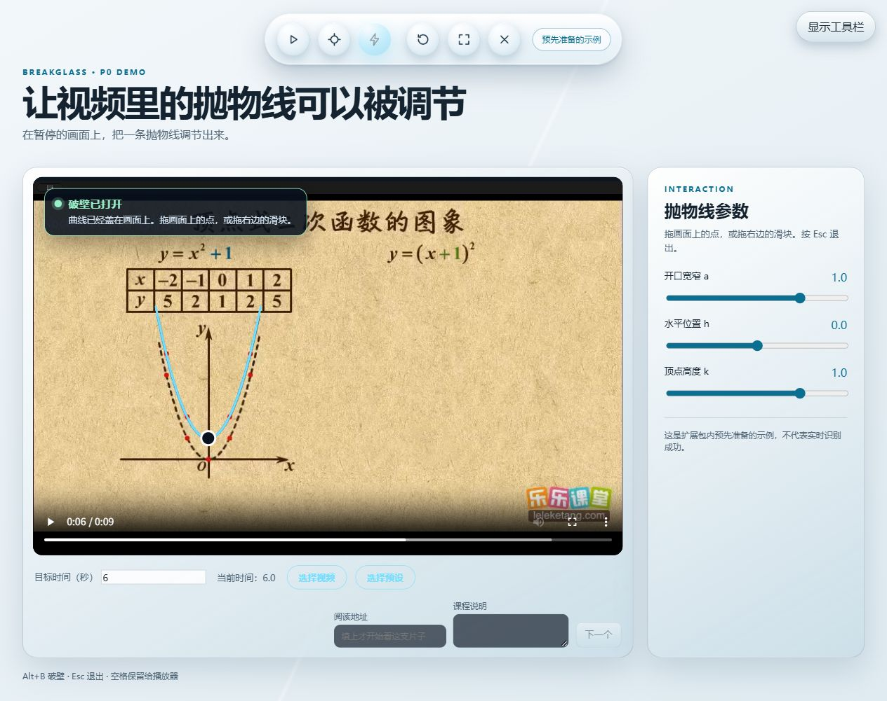
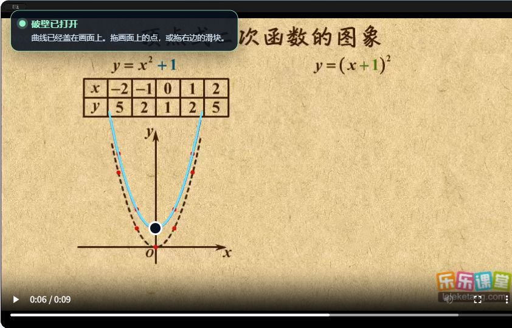

视频里的代码，只是像素
教学视频中的代码和函数图像只是画面像素，无法复制、无法局部微调参数观察变化、无法直接运行。
AI 视觉识别 · 原位注入图层
定位代码 / 图像，提取结构信息
以下为技术方案愿景。真实视觉识别与 Python/Pyodide 属于 P1，当前体验采用本地预制抛物线。
在原视频位置覆盖可交互组件 —— 不跳转、不拆分， 直接在画面上"唤醒"操作入口。
- 显示代码控制台
- 生成可拖拽手柄
- 坐标与文本结构化提取
- 透明悬浮层，高 z-index 挂载
import numpy as np import matplotlib.pyplot as plt x = np.linspace(-10, 10, 300) y = np.sin(x) plt.plot(x, y) plt.show()
三个让体验成立的支点
零侵入性
以标准 HTML5 视频为基础，支持范围按实测确认。
ZERO-INTRUSION原位活化
不跳转、不拆分，直接在视频画面上"唤醒"交互组件。
IN-SITU OVERLAY确定性执行
结构提取与确定性执行分别验证，当前曲线由前端数学函数绘制。
DETERMINISTIC RESULTS同一条曲线，
换一种学习方式。
看见变化，更要亲手验证。拖动一个参数，观察抛物线的开口如何改变。
看见
y = 0.65x²画面中的曲线保持静止。
它告诉你结果，还没有邀请你参与。
亲手验证
y = ax²灰色虚线保留原曲线，方便比较。
拖动参数，亲手验证。
本地预制数学示意 · 曲线由前端函数绘制。打开视频破壁演示
从触发到分流，五层链路
用户触发

暂停这一帧，开始动手内容几何探测层

定位视频内容区多模态感知层

当前使用本地预制结果原位图层挂载层

曲线直接叠在视频上双分支业务分流
函数分支 · 实时调参
仓库真实运行截图 · 点击各层查看大图与实现说明。
当前演示为 P0 本地预制抛物线；真实视觉识别与代码执行属于 P1。
轻量接入，面向真实学习者
技术栈与规划
下列为架构规划，不代表所有能力已经实现。
- 🧩Chrome Extension Manifest V3
- 🎞️Canvas 视频帧处理
- 🐍Pyodide WASM
- 👁️Vision API 结构化识别
- ⌨️CodeMirror 编辑器
- 📈SVG 函数图形渲染
应用场景
- B 站 / 网课 / MOOC 自学
- 编程与理科教学视频
- 学生与开发者自学实践
- 让知识从观看走向创造
目标用户
依靠 Bilibili、网课平台、高校 MOOC 自学编程与理科高阶知识的 学生与开发者 —— 希望把视频里的代码和公式，随时"上手改一改"。
视频不该只是被观看，
知识应该可以被触碰。
Videos are made to be explored, not just watched.
破壁 BreakGlass · 只读视频原位像素逆向活化系统